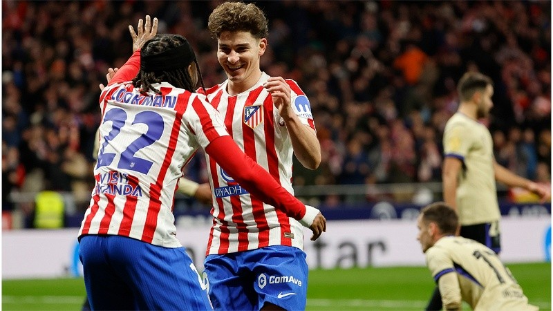

París Saint-Germain a la carga por Julián Álvarez: Luis Enrique lo tiene en su lista
El club francés busca renovar su delantera tras la salida de sus figuras y el delantero de la selección argentina es el principal apuntado.

El mercado de pases europeo comienza a moverse con fuerza y uno de los nombres que más suena en las oficinas del **París Saint-Germain** es el de Julián Álvarez. El ex River, actualmente en el Manchester City, sería el pedido expreso del técnico Luis Enrique para la próxima temporada.
Si bien la "Araña" es pieza importante para Pep Guardiola, la posibilidad de tener mayor rodaje y ser la cara principal del proyecto en Francia podría inclinar la balanza.